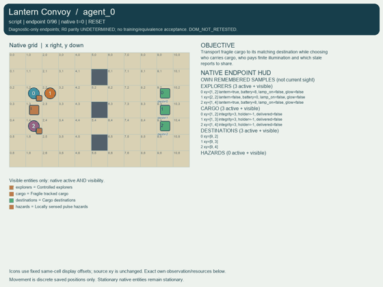
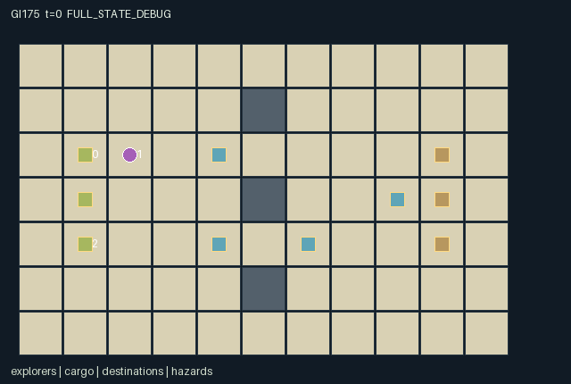

GI175 / SPATIAL
灯笼车队
搬运脆弱货物并分配有限照明，灯笼扩大真实危险视野；转发旧报告保留原时间戳。
Original saved demonstration
Recorded native state, often authored scripts or interventions; information scope and failures are preserved in the original provenance. This is a saved demonstration, not live browser play.

Release verification episode
Untrained uniform legal actions. Actual JAX state sampled along the full original episode; full-state debug camera. No human performance or learning claim.

Run this game
crucibles play --game 175
Start Python locally, then open the address printed by the terminal. Installation, multiplayer, takeover and keyboard controls →
Objective, rewards & ending
Exact task contract
{
"objective": "Transport fragile cargo to its matching destination while choosing who carries cargo, who pays finite illumination and which stale reports to share.",
"natural_termination": "All cargo is delivered or destroyed; these outcomes are distinguished in state. H=96 otherwise truncates.",
"interaction": "Two transferable lanterns expand actual peer hazard observations. One-cargo carrying capacity and adjacent handoffs change peer opportunities; report relays copy aged hazard samples without refreshing timestamps.",
"observation_access": "Fixed walls, all explorer/cargo positions, possession, battery and delivery status are public telemetry. Hazard positions/current pulses are visible only within Manhattan 1, or within observer distance 4 when some glowing lantern is within hazard distance 3. Walls do not occlude this abstract light. Private cargo priorities and peer memories are absent. A role may receive a timestamped one-hop report from an adjacent acting sender."
}Declared per-step reward bounds: -10.0 to 10.0. Observability: partially_observable.
Rules
- All three explorers are controlled. Movement follows public walls; co-location and crossing are allowed. Each explorer carries at most one cargo and one lantern.
- Cargo pickup/drop and delivery use exact cells. Cargo can be passed to an adjacent free carrier; lantern and charge can be passed to an adjacent non-holder.
- Switch-on light consumes one battery per tick, including the toggle tick. The last paid unit still illuminates its snapshot; no charge regenerates.
- A hazard is directly sensed within distance one, or within distance four while lit by a lantern at distance at most three. Walls do not occlude this discrete glow.
- Hazards pulse on the native clock. Armed contact damages carried cargo; destroyed cargo disappears from active cargo and never delivers.
- Relay copies the freshest available sample to adjacent peers in one hop. Sample time is retained; stale armed values are never shown as current hazard state.
- Public cargo telemetry excludes private priorities. Unseen hazard sprites are hidden in role views; complete state is debug-only.
Original mechanism document (historical status wording retained)
# Lantern Convoy
Three controlled explorers navigate an 11 by 7 public floor/wall grid. The central wall x=5, y=1..5 has gaps at y=2 and y=4; the outer rows provide longer alternatives. Co-location, swaps and crossing are permitted. Public radio tracking exposes explorer and cargo positions, inventories and cargo integrity; uncertainty concerns hazard locations/pulses, private cargo priorities and other roles' remembered observations. This is a discrete information/resource game, not an optical or transport simulator.
Actions are 0 wait, 1 north, 2 east, 3 south, 4 west, 5 toggle lantern, 6 pass lantern, 7 pickup/drop cargo, 8 pass cargo, 9 deliver, 10 relay. Cargo pickup/drop and delivery use exact cells. Pickup contention is resolved by ascending actor index and then lowest cargo index. Every actor carries at most one cargo. Lantern and cargo handoffs target the nearest adjacent eligible peer, then lowest peer index; a recipient accepts only the lowest-index donor. Sender and recipient eligibility is fixed before each matching phase. Lantern possession, remaining charge and switch setting move together. The two original lanterns are conserved; there is no charger or spawn mechanism.
At each transition movement precedes transfers. A switched-on held lantern with positive charge pays one battery and emits glow in that snapshot. The final paid unit still lights the snapshot even though remaining charge becomes zero and the switch is cleared. A role directly senses hazards at Manhattan distance at most one, or at distance at most four when any glowing lantern is within distance three of that hazard. Walls do not occlude this deliberately abstract overhead glow. Public tracking of a distant lamp does not itself reveal every hazard it lights: the observer-distance condition still applies.
Four native hazards have fixed positions and phase offsets. At the new clock, armed is ((t+phase) mod 4)<2. An armed contact removes one integrity from cargo currently carried by that explorer, including newly picked or handed cargo. Uncarried cargo is not damaged. Three integrity losses destroy a cargo and clear its holder; it cannot later deliver. Delivery then requires action 9, surviving cargo and its own exact destination. All cargo resolved as delivered/destroyed causes natural termination; the two outcome types remain explicit.
Direct sensing records the current armed value with capture timestamp t. A relay action offers each sample to every adjacent peer. The receiver takes a strictly newer available timestamp, breaking equally fresh sender choices by index; direct sensing and self-memory participate in the comparison. Sender offers are fixed before relay, so a message does not cascade across multiple hops in a tick. A forwarded old sample retains its original timestamp. The observation carries known/unknown and age, and the role renderer only binds the directly visible hazard state. Neither a remembered value nor a received stale report makes the current hazard sprite visible. Global contact and relay-receipt bookkeeping are declared state but deliberately omitted from scene events/attributes, preventing those debug channels from exposing peers' hidden current information.
The reset key samples off-diagonal cargo priorities in {1,2}; each explorer's own indexed cargo priority is three. Every delivery rewards each role by its own priority for that cargo, every destruction penalizes the same value, and the current light payer incurs 0.02. Thus all deliveries are useful, but private rankings and finite carrying/light capacity can produce competing priorities. Carrying a partner's cargo, giving away a charged lamp, splitting routes or preserving battery for a later chokepoint are plausible partner-dependent choices. Charge expenditure affects later observation opportunities; a handoff changes which moving position casts light and who pays. No preference, route or strategy has been evaluated.
Declared bounds are observation [0,1], reward [-10,10], battery 0..8, integrity 0..3 and nonnegative memory age for known reports. Unknown memory timestamps are -1 in state but masked in observations. Cargo holders are -1 or a controlled role index. Entity positions are native transition positions; cargo sprites follow holders, and inactive cargo corresponds to delivery or destruction. Contact effects on public cargo are visible through actual integrity changes; hidden hazard phase offsets are never scene attributes.
The paired relay hypothesis uses seed 17501. Its fixed prefix turns explorer 0's lantern on, turns it off, then moves that explorer beside explorer 2. The branch changes only explorer 0's relay action to wait. Identical waits follow. The intended distinction is whether explorer 2 acquires an aged report while the hazard remains outside its direct visibility; subsequent age should refer to capture time rather than relay time. These claims are source deductions awaiting execution. Prospective geometry, pulse, battery and priority variation would need separately frozen experiments.
Status: AUTHORED_NOT_EXECUTED. All strategies, scripts and paired interventions are source-reasoned hypotheses. No successful replay, effect magnitude, learnability, reward gain, optimality, non-isomorphism or meta-RL transfer is claimed.
The source uses only JAX/JAX NumPy imports; it was never imported or called. The author ran only the supplied trusted stdlib AST whitelist and manifest/scene data validators, plus data-only hashes, state-key/action-range/one-action-difference checks. Shapes, dtypes, jit/vmap parity, numerical bounds, gameplay, rendering, legal script execution and terminal absorption require independent frozen-source integration.
All agents are controlled; there is no scripted teammate, pursuer, planner or oracle. Every step receives a joint action vector. Invalid/out-of-range/masked actions become wait. A live raw step increments t once. A terminal input preserves every state leaf and observation, returns zero rewards and true dones, and preserves causes. Natural completion takes priority over H=96 truncation. The outer wrapper must perform auto-reset.
Representation: counters, identifiers and inventories use int32; flags use bool; observations/rewards use float32. The external reset key is not duplicated in state. Stochasticity, where present, uses only that key. No design-required distribution was removed to satisfy the interface.
Provenance: only the 22 current closed inputs listed in author_input_freeze.json were read. The five official reference files were read as bytes for integrity only; their text/code was not semantically consulted, copied or executed. These are original game kernels, with no copied upstream code or incorporated upstream license text. Reference URLs remain input-bundle provenance. No prior candidates, selection/training outcomes, heldout inputs, network sources or external models were used. Adapters, real trajectories and animation belong to independent integration. New A/O/U contracts do not license reuse of old policy weights or two-player ranking statistics.
Literal source evidence:
- candidate.py:L17: `priorities = jnp.where(jnp.eye(3, dtype=jnp.bool_), 3, priorities)`
- candidate.py:L61: `lit = jnp.any((distance <= 3) & state['glow'][:, None], axis=0)`
- candidate.py:L62: `visible = (distance <= 1) | ((distance <= 4) & lit[None, :])`
- candidate.py:L70: `offers = jnp.where(receive_from[:, :, None], stamp[None, :, :], -1)`
- candidate.py:L75: `s['memory_stamp'] = jnp.where(newer, best_stamp, stamp)`
- candidate.py:L121: `matching = self.matching(pos, (actions == 6) & state['lantern'], ~state['lantern'])`
- candidate.py:L129: `glow = lantern & lamp_on & (battery > 0)`
- candidate.py:L130: `s['battery'] = battery - glow.astype(jnp.int32)`
- candidate.py:L164: `armed = ((s['t'] + state['hazard_phase']) % 4) < 2`
- candidate.py:L166: `damaged = (holder >= 0) & contact[jnp.maximum(holder, 0)] & state['cargo_active']`
- candidate.py:L184: `s['terminated'] = jnp.all(delivered | (integrity == 0))`
- candidate.py:L225: `age = jnp.where(known, state['t'] - state['memory_stamp'], 0) / 96.0`
- candidate.py:L223: `jnp.where(visible[:, :, None], direct_values[None, :, :], 0.0)], axis=2).reshape(3, -1)`
- candidate.py:L240: `next_state = jax.tree.map(lambda new, old: jnp.where(state['done'], old, new), proposed, state)`
Commands
Roles & abilities
agent_0 explorer prioritizing cargo 0
agent_1 explorer prioritizing cargo 1
agent_2 explorer prioritizing cargo 2
Observation permissions
Training receives only the original observation rows. Role cameras use declared visibility; debug cameras are explicitly marked. Local benchmark records log debug exposure and role takeover history.
Exact observation layout
[
{
"slice": [
0,
3
],
"meaning": "Observer identity one-hot",
"visibility": "self"
},
{
"slice": [
3,
6
],
"meaning": "Own three cargo priorities / 3; no peer priorities",
"visibility": "self"
},
{
"slice": [
6,
9
],
"meaning": "Own cargo possession bits",
"visibility": "self"
},
{
"slice": [
9,
10
],
"meaning": "Own lantern possession",
"visibility": "self"
},
{
"slice": [
10,
11
],
"meaning": "Own charge / 8",
"visibility": "self"
},
{
"slice": [
11,
12
],
"meaning": "Own switch-on state",
"visibility": "self"
},
{
"slice": [
12,
13
],
"meaning": "Own paid glow snapshot",
"visibility": "self"
},
{
"slice": [
13,
14
],
"meaning": "Clock / 96",
"visibility": "public"
},
{
"slice": [
14,
91
],
"meaning": "Public topology map, row-major 7 by 11, floor=0 wall=1",
"visibility": "public"
},
{
"slice": [
91,
94
],
"meaning": "Public delivered flags",
"visibility": "public"
},
{
"slice": [
94,
97
],
"meaning": "Public destroyed flags",
"visibility": "public"
},
{
"slice": [
97,
103
],
"meaning": "Destination-major [x/10,y/6]",
"visibility": "public"
},
{
"slice": [
103,
106
],
"meaning": "Joint done, natural termination, truncation",
"visibility": "public"
},
{
"slice": [
106,
130
],
"meaning": "Three public explorer tuples: visible=1,x/10,y/6,lantern,charge/8,switch,glow,carried-cargo-code/3; code 0 none, 1..3 cargo",
"visibility": "public"
},
{
"slice": [
130,
148
],
"meaning": "Three public cargo tuples: visible=1,x/10,y/6,integrity/3,(holder+1)/3,active",
"visibility": "public"
},
{
"slice": [
148,
164
],
"meaning": "Four direct hazard tuples: visible,x/10,y/6,armed; all payload fields zero when invisible",
"visibility": "local"
},
{
"slice": [
164,
184
],
"meaning": "Four memory tuples: known,x/10,y/6,armed-at-capture,age/96; unknown payload zero. Relay preserves capture timestamp.",
"visibility": "local"
}
]Entity visibility & attributes
[
{
"id": "explorers",
"kind": "agent",
"count": 3,
"position": [
"agent_pos"
],
"active": [
"agent_active"
],
"visibility": [
"agent_visibility"
],
"attributes": [
{
"state_path": [
"lantern"
],
"meaning": "Holds a lantern",
"display": "flag"
},
{
"state_path": [
"battery"
],
"meaning": "Remaining battery units",
"display": "bar"
},
{
"state_path": [
"lamp_on"
],
"meaning": "Switch remains on",
"display": "flag"
},
{
"state_path": [
"glow"
],
"meaning": "Paid illumination this tick",
"display": "flag"
}
]
},
{
"id": "cargo",
"kind": "object",
"count": 3,
"position": [
"cargo_pos"
],
"active": [
"cargo_active"
],
"visibility": [
"cargo_visibility"
],
"attributes": [
{
"state_path": [
"integrity"
],
"meaning": "Fragile cargo integrity",
"display": "bar"
},
{
"state_path": [
"holder"
],
"meaning": "Holder index; -1 means unheld",
"display": "category"
},
{
"state_path": [
"delivered"
],
"meaning": "Delivered cargo",
"display": "flag"
}
]
},
{
"id": "destinations",
"kind": "landmark",
"count": 3,
"position": [
"goal_pos"
],
"active": [
"goal_active"
],
"visibility": [
"goal_visibility"
],
"attributes": []
},
{
"id": "hazards",
"kind": "hazard",
"count": 4,
"position": [
"hazard_pos"
],
"active": [
"hazard_active"
],
"visibility": [
"hazard_visibility"
],
"attributes": [
{
"state_path": [
"armed"
],
"meaning": "Currently armed pulse, visible only when sensed",
"display": "flag"
}
]
}
]Actual verification & provenance
Per-game execution receipt
{
"game": "gi175",
"status": "PASS",
"verification_revision": 2,
"source_sha256": "57c802dfeaad65e5f760a9ebeb08cb53a8704c8a8c65c045b2a6e3900db527a7",
"seed": 20261101,
"runtime": {
"jax": "0.4.38",
"numpy": "1.26.4",
"devices": [
"TFRT_CPU_0"
]
},
"dimensions": {
"num_agents": 3,
"observation_size": 184,
"num_actions": 11,
"max_steps": 96
},
"checks": {
"eager_reset": {
"status": "PASS",
"seconds": 4.588191270828247
},
"observation_spaces_legal_masks": {
"status": "PASS",
"seconds": 1.1267366409301758
},
"eager_step": {
"status": "PASS",
"seconds": 3.496127128601074
},
"jit_reset": {
"status": "PASS",
"seconds": 0.832045316696167
},
"jit_step": {
"status": "PASS",
"seconds": 1.414590835571289
},
"eager_jit_integer_parity_float_measurement": {
"status": "PASS",
"seconds": 0.0020003318786621094
},
"jit_vmap_reset": {
"status": "PASS",
"seconds": 0.5784146785736084
},
"jit_vmap_step": {
"status": "PASS",
"seconds": 2.4599828720092773
},
"outer_autoreset_api": {
"status": "PASS",
"seconds": 1.684147834777832
},
"full_original_horizon_episode_and_render": {
"status": "PASS",
"seconds": 1.4096136093139648
}
},
"human_scores": null,
"browser_controls": "PENDING",
"failures": [],
"elapsed_seconds": 18.310774326324463,
"float_parity_max_abs": 5.960464477539063e-08,
"numerical_parity": "UNDETERMINED_NONZERO_FLOAT_DIFFERENCE",
"raw_terminal_absorbing": "PASS",
"terminal_outer_reset": "PASS",
"episode_steps": 96,
"scripted_random_returns": [
-0.1599999964237213,
0.0,
-0.1599999964237213
],
"terminal": true,
"demo_information": "FULL_STATE_DEBUG",
"demo_frames": 25,
"render_roles_checked": 3
}Chromium control verification
{
"game": "gi175",
"status": "PASS",
"human_scores": null,
"engineering": true,
"checks": [
"catalog_selected_and_real_native_reset",
"keyboard_native_direction_command",
"dom_queue_and_native_step",
"second_participant_ownership_and_native_joint_step",
"all_roles_individually_controllable_no_role_cap",
"explicit_debug_camera",
"release_to_pure_ai_without_reset",
"close_session_preserves_log"
],
"ui_sha256": "96243f9de144b80b5e20a114330e2206bdcd58d3efc9c6f13bbc08b95cacc14d",
"keyboard_action_id": 1,
"seconds": 5.8313868045806885
}Original identity and file hashes
{
"id": 175,
"key": "gi175",
"title": "灯笼车队",
"summary": "搬运脆弱货物并分配有限照明，灯笼扩大真实危险视野；转发旧报告保留原时间戳。",
"tags": [
"照明协作",
"陈旧信息"
],
"family": "spatial",
"dimensions": {
"num_agents": 3,
"observation_size": 184,
"num_actions": 11,
"max_steps": 96
},
"source_sha256": "57c802dfeaad65e5f760a9ebeb08cb53a8704c8a8c65c045b2a6e3900db527a7",
"manifest_sha256": "0ae65b81c78d41a1eee4273d0fdd40b8276c40d8c6870d65cf441cfc2719e35e",
"files": [
{
"file": "candidate.py",
"sha256": "57c802dfeaad65e5f760a9ebeb08cb53a8704c8a8c65c045b2a6e3900db527a7",
"bytes": 13997,
"origin": "work/exp_2/game_incubator_v3/community_games222_225_visualization_root222_v1/native154_candidate/registry/v2/games/game-v3-00175/candidate.py"
},
{
"file": "manifest.json",
"sha256": "0ae65b81c78d41a1eee4273d0fdd40b8276c40d8c6870d65cf441cfc2719e35e",
"bytes": 14103,
"origin": "work/exp_2/game_incubator_v3/community_games222_225_visualization_root222_v1/native154_candidate/registry/v2/games/game-v3-00175/manifest.json"
},
{
"file": "scene.json",
"sha256": "2bab14b3bd3a42e3d040b950067dace640fe92bd434bb8ca12c49d356a3d328b",
"bytes": 8049,
"origin": "work/exp_2/game_incubator_v3/community_games222_225_visualization_root222_v1/native154_candidate/registry/v2/games/game-v3-00175/scene.json"
},
{
"file": "mechanism.md",
"sha256": "600f0e6402eb2ae07fbe1a65ca178b497d425e1238ad613beca9428611ce2197",
"bytes": 8387,
"origin": "work/exp_2/game_incubator_v3/sources/game-v3-00175/attempt_00/mechanism.md"
},
{
"file": "playthrough.json",
"sha256": "bbff02f54483c1ec0df849b6bcb59eb2e8656e06a4f564b126065c23dcbe30b2",
"bytes": 3248,
"origin": "work/exp_2/game_incubator_v3/sources/game-v3-00175/attempt_00/playthrough.json"
}
],
"original_status": "NATIVE154_REFERENCE",
"original_saved_replay": true,
"release_validation": "PASS",
"human_scores": null,
"browser_validation": "PASS"
}